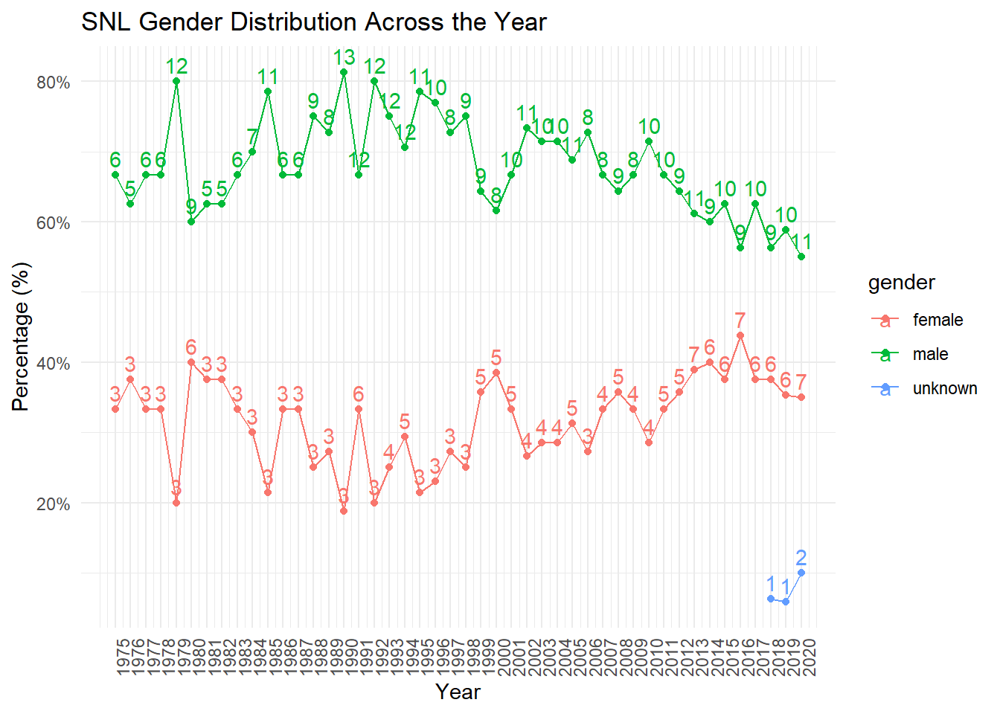

Generated by summarytools 1.0.1 (R version 4.3.0) 2023-06-18
Briefly describe the data
This data contains information about the casts and actors that partook in any SNL show.
snl_actors.csv contains 2,306 rows of people who were part of SNL, and holds the name (under aid), the url for the person, the type of member (cast, guest, crew, or unknown, and gender (male, female, unknown, and andy (not sure what gender andy is)). This data is already tidy.
snl_casts.csv contains information about cast members, and is broken down by the the name (under aid) and the season (sid). It also tells if the member was featured in the show or season, the first episode and last episode of SNL they were on (first_epid and last_epid, respectively), if they were part of the weekend update_anchor, the n_epsiodes they were on, and what fraction of episodes for a particular season they were featured on (season_fraction). Both first_epid and last_epid seem to be dates in the form of YYYYMMDD, but because this seems to be an identifier, I won’t be changing it to a date type. This data also seems to already be tidy.
Lastly, snl_seasons.csv gives insight about each season, and there 46 years in this dataset (from 1975 to 2020). It includes a unique identifier (sid), year, IDs for the first and last episode (first_epid and last_epid), and n_episodes per season. both first_epid and last_epid seem to be dates in the form of YYYYMMDD, but because this seems to be an identifier, I won’t be changing it to a date type.
To join our data, I will be using the aid columns from actors and casts as the join condition, and then use the sid from casts and seasons to join these two datasets. I will use an inner join, as for my analysis comparing gender diversity across the history of SNL, I need gender information (found in actors) and year that each actor was present (found in seasons)
Joining and tidying the data
Given that casts is the dataframe connecting all datasets together, we expect to see each row representing a cast member and a season. Thus, there should be at most 614 rows (matching the rows of casts), though it can be less if there aren’t any joins. We also expect 15 columns (4 columns in actors, 8 columns in casts, and 5 columns in seasons, minus 2 ID columns from joining).
Generated by summarytools 1.0.1 (R version 4.3.0) 2023-06-18
From the summary statistics above, we see that there are 614 columns rows and 15 columns, which matches our predictions.
Analysis
As mentioned previously, my goal is to see how the gender demographics change over time. To do this, I will make a line plot with the x-axis representing the year, and the y-axis representing the proportion of a specific gender who made up the cast. Each line will represent a gender category.
# A tibble: 95 × 4
# Groups: year [46]
year gender n_gender prop_gender
<dbl> <chr> <int> <dbl>
1 1975 female 3 0.333
2 1975 male 6 0.667
3 1976 female 3 0.375
4 1976 male 5 0.625
5 1977 female 3 0.333
6 1977 male 6 0.667
7 1978 female 3 0.333
8 1978 male 6 0.667
9 1979 female 3 0.2
10 1979 male 12 0.8
# ℹ 85 more rows
# Visualize dataggplot(gender_breakdown, aes(x=year, y=prop_gender, color=gender)) +geom_line() +geom_point() +geom_text(aes(x=year, y=prop_gender, label=n_gender), vjust=-0.5) +theme_minimal() +scale_x_continuous(breaks=min(gender_breakdown$year):max(gender_breakdown$year), labels=min(gender_breakdown$year):max(gender_breakdown$year)) +scale_y_continuous(labels=scales::percent_format(accuracy=1)) +labs(title="SNL Gender Distribution Across the Year",x="Year",y="Percentage (%)") +theme(axis.text.x =element_text(angle=90)) +guides(fill=guide_legend(title="Gender"))

The graph above shows both the percentages and the counts the genders for the casts for each show, assuming that the data is correct. It’s interesting to see that the proportion of males on the show tends to decrease over time, while the proportion of women tends to increase over time. The number of cast members also seems to increase over time, as in 1975, there were only 9 distinct people in the entire season, but by 2020, there were 20 unique people on the show.
Source Code
---title: "Challenge 8 Solution - SNL Gender Distribution Over Time"author: "Linus Jen"description: "Joining Data"date: "6/27/2023"format: html: toc: true code-copy: true code-tools: truecategories: - challenge_8 - snl - Linus Jen---```{r}#| label: setup#| warning: false#| message: falselibrary(tidyverse)library(ggplot2)library(here)knitr::opts_chunk$set(echo =TRUE, warning=FALSE, message=FALSE)```# Challenge OverviewFor this challenge, I will be investigating the SNL related datasets (`snl_actors.csv`, `snl_casts.csv`, and `snl_seasons.csv`).For my analysis, I want to look at how the gender diversity has changed over time.```{r}actors <-read_csv(here("posts", "_data", "snl_actors.csv"))casts <-read_csv(here("posts", "_data", "snl_casts.csv"))seasons <-read_csv(here("posts", "_data", "snl_seasons.csv"))# Rename some columnscasts <- casts %>%rename("n_eps_present"="n_episodes","first_ep_present"="first_epid","last_ep_present"="last_epid")seasons <- seasons %>%rename("s_first_epid"="first_epid","s_last_epid"="last_epid","s_n_episodes"="n_episodes")# Summary informationprint(summarytools::dfSummary(actors,varnumbers=FALSE,plain.ascii=FALSE,style="grid",graph.magnif =0.70,valid.col=FALSE),method="render",table.classes="table-condensed")print(summarytools::dfSummary(casts,varnumbers=FALSE,plain.ascii=FALSE,style="grid",graph.magnif =0.70,valid.col=FALSE),method="render",table.classes="table-condensed")print(summarytools::dfSummary(seasons,varnumbers=FALSE,plain.ascii=FALSE,style="grid",graph.magnif =0.70,valid.col=FALSE),method="render",table.classes="table-condensed")```### Briefly describe the dataThis data contains information about the casts and actors that partook in any SNL show.`snl_actors.csv` contains 2,306 rows of people who were part of SNL, and holds the name (under `aid`), the `url` for the person, the `type` of member (cast, guest, crew, or unknown, and `gender` (male, female, unknown, and andy (not sure what gender andy is)). This data is already tidy.`snl_casts.csv` contains information about cast members, and is broken down by the the name (under `aid`) and the season (`sid`). It also tells if the member was `featured` in the show or season, the first episode and last episode of SNL they were on (`first_epid` and `last_epid`, respectively), if they were part of the weekend `update_anchor`, the `n_epsiodes` they were on, and what fraction of episodes for a particular season they were featured on (`season_fraction`). Both `first_epid` and `last_epid` seem to be dates in the form of `YYYYMMDD`, but because this seems to be an identifier, I won't be changing it to a date type. This data also seems to already be tidy.Lastly, `snl_seasons.csv` gives insight about each season, and there 46 years in this dataset (from 1975 to 2020). It includes a unique identifier (`sid`), `year`, IDs for the first and last episode (`first_epid` and `last_epid`), and `n_episodes` per season. both `first_epid` and `last_epid` seem to be dates in the form of `YYYYMMDD`, but because this seems to be an identifier, I won't be changing it to a date type.To join our data, I will be using the `aid` columns from `actors` and `casts` as the join condition, and then use the `sid` from `casts` and `seasons` to join these two datasets. I will use an inner join, as for my analysis comparing gender diversity across the history of SNL, I need gender information (found in `actors`) and year that each actor was present (found in `seasons`)## Joining and tidying the dataGiven that `casts` is the dataframe connecting all datasets together, we expect to see each row representing a cast member and a season. Thus, there should be at most 614 rows (matching the rows of `casts`), though it can be less if there aren't any joins. We also expect 15 columns (4 columns in `actors`, 8 columns in `casts`, and `5` columns in `seasons`, minus 2 ID columns from joining).```{r}# Join datasetsfull_df <- casts %>%inner_join(actors, by="aid") %>%inner_join(seasons, by="sid")# View data togetherprint(summarytools::dfSummary(full_df,varnumbers=FALSE,plain.ascii=FALSE,style="grid",graph.magnif =0.70,valid.col=FALSE),method="render",table.classes="table-condensed")```From the summary statistics above, we see that there are 614 columns rows and 15 columns, which matches our predictions.## AnalysisAs mentioned previously, my goal is to see how the gender demographics change over time. To do this, I will make a line plot with the x-axis representing the year, and the y-axis representing the proportion of a specific gender who made up the cast. Each line will represent a `gender` category.```{r}gender_breakdown <- full_df %>%group_by(year, gender) %>%summarise(n_gender =n_distinct(aid)) %>%ungroup() %>%group_by(year) %>%mutate(prop_gender = n_gender /sum(n_gender))# Show datastegender_breakdown# Visualize dataggplot(gender_breakdown, aes(x=year, y=prop_gender, color=gender)) +geom_line() +geom_point() +geom_text(aes(x=year, y=prop_gender, label=n_gender), vjust=-0.5) +theme_minimal() +scale_x_continuous(breaks=min(gender_breakdown$year):max(gender_breakdown$year), labels=min(gender_breakdown$year):max(gender_breakdown$year)) +scale_y_continuous(labels=scales::percent_format(accuracy=1)) +labs(title="SNL Gender Distribution Across the Year",x="Year",y="Percentage (%)") +theme(axis.text.x =element_text(angle=90)) +guides(fill=guide_legend(title="Gender"))```The graph above shows both the percentages and the counts the genders for the casts for each show, assuming that the data is correct. It's interesting to see that the proportion of males on the show tends to decrease over time, while the proportion of women tends to increase over time. The number of cast members also seems to increase over time, as in 1975, there were only 9 distinct people in the entire season, but by 2020, there were 20 unique people on the show.